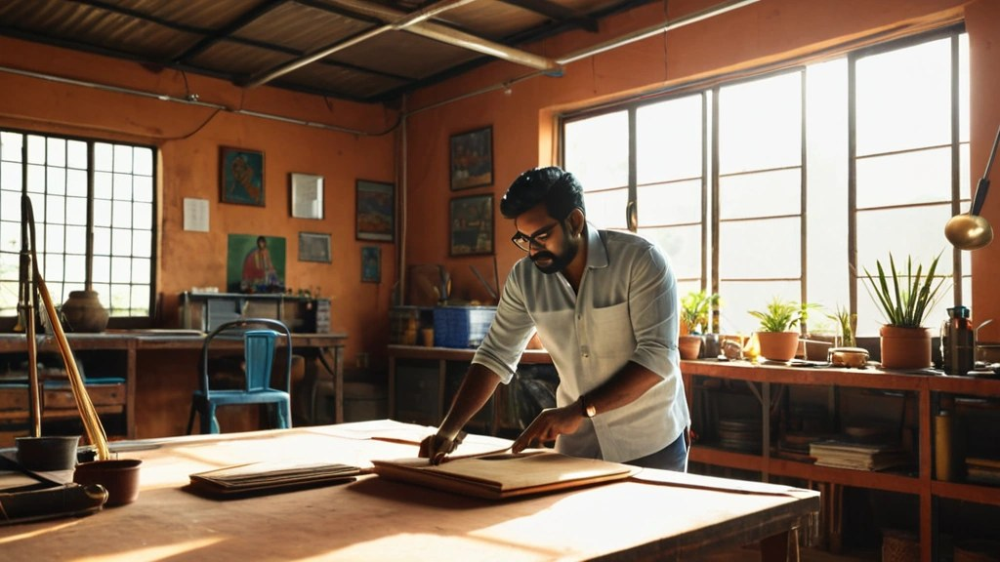

क्या धन कमाना आध्यात्मिक जीवन के विरुद्ध है? क्या पैसे की इच्छा रखना कोई पाप है?
अंतरयोग श्री विद्या शिविर के अवसर पर दिए गए इस प्रवचन में आचार्य जी इसी पुरानी धारणा को तोड़ते हैं। वे बताते हैं कि श्री विद्या एक ऐसी दुर्लभ साधना है जो साधक के भीतर धन कमाने की शक्ति को एक सिद्धि (आध्यात्मिक क्षमता) के रूप में जाग्रत करती है।
क्यों कुछ लोग बहुत अमीर और कुछ बहुत गरीब हैं?
हर किसी के लिए धन कमाना आसान नहीं होता। बहुत से लोग दिन भर मेहनत करते हैं, तब जाकर उन्हें थोड़ा सा पैसा मिलता है, और उसी में वे गुजारा करते हैं।
दूसरी ओर एक वर्ग अरबपतियों और खरबपतियों का है। आचार्य जी कहते हैं कि अपने देश में उन्होंने बहुत ऊंच-नीच देखी है। कुछ लोग बहुत अमीर हैं, कुछ बहुत गरीब।
नौकरी से आगे का सपना
हमारी शिक्षा पद्धति में यह विद्या सिखाई ही नहीं जाती। स्कूल और कॉलेज से निकलने वाला बच्चा सबसे पहले यही सोचता है कि नौकरी कहां करूं।
सबसे होनहार बच्चा भी यही सोचता है कि विदेश जाकर नौकरी कैसे पा लूं। आचार्य जी चाहते हैं कि वह बड़ा उद्योजक (उद्यमी, entrepreneur) बने, कुछ बड़ा करे। और धर्म का कोई कार्य करना हो, तो उसके लिए भी धन चाहिए।
आपने आखिरी बार कब सोचा था कि आप केवल नौकरी करने के लिए नहीं, कुछ रचने के लिए बने हैं?

धन की आवश्यकता में शर्म कैसी?
आचार्य चाणक्य का सूत्र इस सत्य को स्पष्ट करता है:
सुखस्य मूलं धर्मः। धर्मस्य मूलमर्थः। अर्थस्य मूलं राज्यम्॥
(चाणक्य सूत्र १-३)
सुख का मूल धर्म है, धर्म का मूल अर्थ (धन) है, और अर्थ का मूल राज्य है। इसलिए राज्य को संपन्न होना चाहिए, और धन की आवश्यकता में कोई शर्माने वाली बात नहीं है।
भगवान विष्णु पालनकर्ता हैं, और पालन के लिए माता लक्ष्मी सदा उनके साथ हैं। वैदिक काल में भारत को सोने की चिड़िया कहा जाता था। द्वारकाधीश श्री कृष्ण और श्री राम, दोनों के पास धन की कोई कमी नहीं थी।
आचार्य जी कहते हैं कि हमें जो सोच दी गई है कि पैसा खराब है, अमीर खराब हैं, अमीरी खराब है और इससे दिमाग खराब होता है, ऐसा कुछ भी सच नहीं है।
श्री विद्या केवल धन कमाना नहीं है
असली विद्या यह है कि धन का नियोजन कैसे करें, उसे कैसे संभालें, उसमें से धर्म और दान कैसे करें। जो यह ठीक से सीख ले, वही श्री विद्या को समझता है।
श्री विद्या को भोग और मोक्ष, दोनों एक साथ देने वाली विद्या कहा जाता है। यहां भोग का अर्थ है संसार के सुख और साधन, और मोक्ष का अर्थ है मुक्ति (liberation)।
आचार्य जी बताते हैं कि श्री विद्या वह विद्या है जो भोग को योग की सामग्री बनाते हुए मुक्ति की ओर ले जाती है।
यानी संसार से भागना नहीं, बल्कि संसार के साधनों को ही साधना का माध्यम बना लेना।
क्या आपका धन आपको बांध रहा है, या आपको मुक्ति की ओर ले जा रहा है?
विदेशों में भी यही विद्या
आचार्य जी कहते हैं कि विदेशों में भी आज यही विद्या प्रयोग हो रही है। एक ओर उन्होंने भारत को लूटकर धन लिया, और दूसरी ओर वे हमारी ही श्री विद्या लेकर गए। वहां के बड़े-बड़े उद्योगपतियों ने यहीं से यह विद्या सीखी थी।
गुरुओं की परंपरा और श्री यंत्र साधना
श्री विद्या की परंपरा बहुत प्राचीन है। आदि शंकराचार्य जी के पास सौंदर्य लहरी और श्री विद्या थी। अगस्त्य मुनि, दत्तात्रेय, मच्छिंद्रनाथ और गोरखनाथ की परंपरा में भी यही विद्या है। आचार्य चाणक्य का कौटिल्य अर्थशास्त्र आज विश्व भर में प्रसिद्ध है।
शिविर में इसकी दुर्लभ साधनाएं भी दी जा रही हैं। श्री यंत्र की साधना, जो माता लक्ष्मी की साधना है, एक विशिष्ट पद्धति से कराई जाती है। इसमें एक विशेष विग्रह (पूजन हेतु दिव्य प्रतिमा या स्वरूप) होता है, जिसकी रचना विज्ञान के अनुसार की जाती है। यह एक प्राचीन, दुर्लभ और गुप्त साधना है।
तीन करोड़ लोगों तक पहुंचने का संकल्प
यह आयोजन केवल एक दिन का नहीं है। आचार्य जी इसे भारत के हर शहर और गांव-गांव तक ले जाना चाहते हैं। संकल्प है कि देश के कम से कम दो प्रतिशत, यानी लगभग पौने तीन से तीन करोड़ लोगों तक श्री विद्या पहुंचे।
भारत की अर्थव्यवस्था बढ़ रही है, पांच खरब डॉलर की ओर जा रही है, और यह गर्व की बात है। लेकिन आचार्य जी ने देखा कि इसमें कुछ गिने-चुने लोग ही बहुत अमीर हो रहे हैं, बाकी वैसे के वैसे हैं। उनकी मान्यता है कि कम से कम तीन-चार करोड़ लोग स्वयं उद्यमी बनें।
आज यह विद्या केवल अमीर के बेटे को सिखाई जाती है। राजनेता के बेटे को ही राजनीति सीखने को मिलती है। बाकी लोगों को स्कूल-कॉलेज में यह नहीं मिलती, या मिलती भी है तो प्रचलित नहीं है।
देश बचेगा तो धर्म बचेगा
आचार्य जी शिक्षा मंत्री, वित्त मंत्री और सभी संबंधित लोगों का आह्वान करते हैं कि यह विद्या पूरे देश को मिले, ताकि भारत शीघ्र आर्थिक महासत्ता बन सके। यह धन धर्म के कार्यों में, देश की रक्षा में और हमारी सेनाओं के संरक्षण में सहायक होगा।
आचार्य जी कहते हैं कि देश बचेगा तो धर्म बचेगा, और धर्म बचा तो उसमें संस्कृति फल-फूल सकती है। तभी धन का वास्तविक लाभ होता है। अपने शरीर को स्वस्थ रखने के लिए भी धन लगता है। आचार्य जी उद्योगपतियों और देश के सभी नागरिकों से इस कार्यक्रम से जुड़ने का आह्वान करते हैं।
मुख्य सीख
- धन की आवश्यकता में कोई शर्म नहीं; चाणक्य के अनुसार धर्म का मूल अर्थ है।
- विष्णु के साथ लक्ष्मी हैं; श्री कृष्ण और श्री राम के पास भी धन की कमी नहीं थी।
- श्री विद्या केवल धन कमाना नहीं, धन का नियोजन, धर्म और दान सिखाती है।
- यह भोग को योग की सामग्री बनाकर मुक्ति तक ले जाने वाली विद्या है।
- आदि शंकराचार्य, अगस्त्य मुनि, दत्तात्रेय, नाथ परंपरा और चाणक्य, सब इस परंपरा से जुड़े हैं।
- लक्ष्य है करोड़ों लोगों को नौकरी से आगे उद्यमी बनाना और भारत को आर्थिक महासत्ता बनाना।